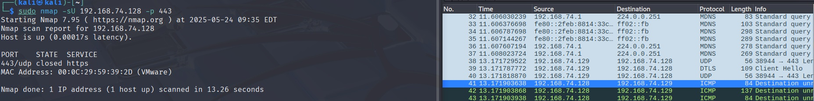
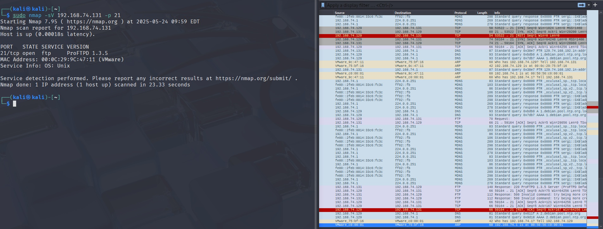
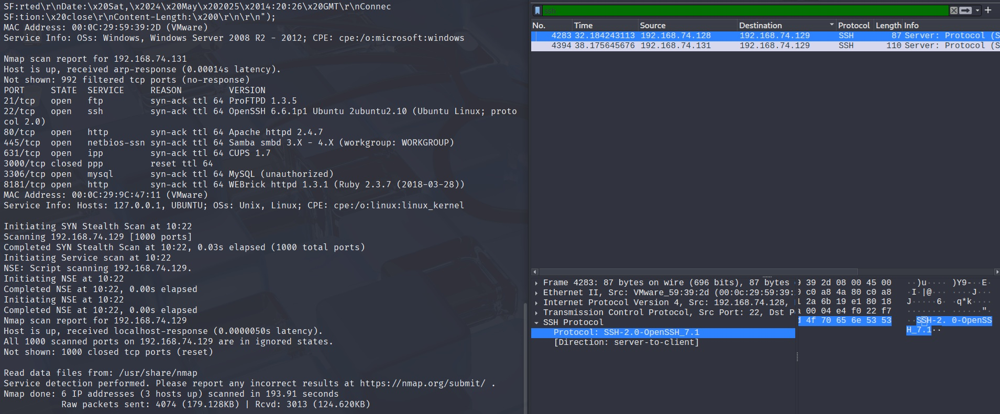
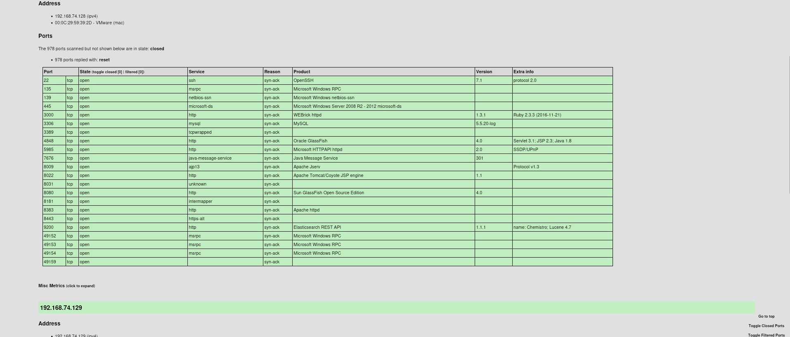

Este método hace el three way handshake completo, dependiendo la situacion se puede usar uno u otro, -sS suele ser mejor por que hace menos ruido. Un caso en el que podría usarse -sT es que en algunas ocasiones detectan el three way handshake cancelado, lo que levanta alarmas, entonces aquí usaríamos -sT
El parámetro -sU sirve para hacer el escaneo mediante UDP, intenta ver si hay servicios utilizando protocolo UDP.

En la captura se puede ver como en la parte de nmap el escaneo fue realizado mediante udp, el puerto, y el servicio que según un fichero que tiene nmap con los servicios que corren por default en ciertos puertos, dicho archivo suele situarse en /usr/share/nmap y si abrimos el archivo nmap-service podemos verlo
En la parte de wireshar podemos ver como en la ICMP nos da destination unreachable por que el puerto está cerrado
Usamos sudo nmap -sV 192.168.x.x -p 21

aquí se puede ver un poco como interactúa con la máquina por la parte de wireshark. En la parte de nmap nos dice que hay un host levantado en esa IP, y que tiene un servicio abierto en el puerto que escaneamos, en este caso el 21/tcp, servicio FTP, versión: ProFTPD 1.3.5
Con dicha información ya podemos buscar si existen vulnerabilidades o exploits en diferentes fuentes públicas.
También nos dice que el sistema operativo es Unix, pero podemos obtener de otras maneras más información sobre el OS.
Usemos -sV para exportar y un rango de ips para escanear mis dos máquinas virtuales: sudo nmap -sV -v --reason 192.168.x.x-x -oX servicios.xml --stylesheet="https://svn.nmap.org/nmap/docs/nmap.xsl"
Ten en cuenta que esta prueba es un escaneo profundo de todos los puertos de los rangos de IP que especifíques, por lo que, asegúrate de hacerlo en un entorno cerrado y controlado, en mi caso lo hago con 2 máquinas metasploitable, una ubuntu y una windows, para que podamos observar también como ver los fallos.
Si observamos wireshark, podemos ver cómo por ejemplo he filtrado SSH para ver cómo conseguimos la versión de SSH que está corriendo, en realidad nuestra máquina recibe un paquete con el servicio como se puede ver en la parte señalada, de esa manera nmap nos lo vuelca
de nuevo, elevamos permisos con sudo chmod777 servicios.xml y lo abrimos con firefox servicios.xml
Observamos el resultado volcado, en mi caso, la ip .128 corresponde a mi metasploitable windows, como se puede ver si miramos los servicios.
Aquí tenemos el escaneo de la máquina ubuntu, la .131, la cual también al leer la info extra o la versión ya podemos ver que es un linux